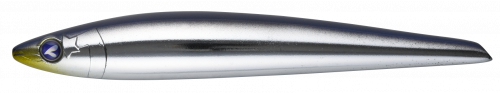
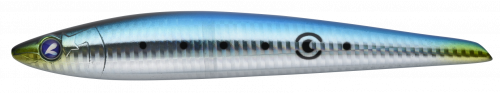
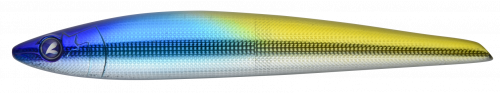
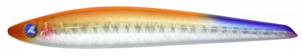

ガチスラ180HS
（GACHISLA 180HS）
ガチスラ180HSはBlueBlue（ブルーブルー）のヘビーシンキングペンシルです。
青物やGTなどの大型魚を狙う、超ヘビーシンペンの進化版。細身で後方重心の180mm・110gボディは誰でも投げやすく、素早く沈められます。オリジナルの230mm譲りの軽い引き心地で、長時間使っても疲れにくいのが特徴です。

画像出典:BlueBlue公式HP
スペック
- メーカー
- BlueBlue（ブルーブルー）
- タイプ
- ヘビーシンキングペンシル
- 全長
- 180mm
- 自重
- 110g
- 推奨フック
- トレブル#1/0〜2/0／シングル#4/0
- 推奨リング
- #4
- 構造
- 貫通ワイヤー＋遊動式ウエイトボール
- ターゲット
- ヒラマサ・ブリ・GTなど大型青物
- 価格
- 3,250円（税別）
▼今すぐチェック

ガチスラ180HSの特徴
細身・後方重心で、大型青物の前に確実に届けるヘビーシンペン
-
よく飛び、早く沈む
細身で後方重心のボディで、誰でも投げやすくしっかり飛ばせます。速やかにフォールするので、カウントダウンで狙いのレンジに沈める使い方にも向いています。
-
圧倒的に軽い引き心地
引き心地や操作感が軽く、超早巻きもOK。オリジナルの230mm譲りの使い心地で、長時間投げ続けても疲れにくくなっています。
-
スライドと不規則なアクション
ロングジャーク・ショートジャークで魅惑的なスライドアクションを自由に出せます。遊動式ウエイトボールがアクションに不規則な変化を加え、バイトを誘います。
ガチスラ180HSの使い方
基本はカウントダウンで狙いのレンジまで沈めてからのジャーク。ロングジャークで大きくスライドさせたり、ショートジャークで細かく動かしたりして誘います。
ナブラや表層の反応がないときは、深めのレンジまで沈めて探るのも効果的。超早巻きで追わせる使い方もできます。
ガチスラ180HSの得意な状況
磯からのヒラマサ・ブリ狙いや、オフショアのキャスティング。トップに反応がないときや、魚が少し深いレンジにいるとき、風が強くて軽いルアーが届かないときに向いています。
ワンポイント
さらに大きいシルエットで大物を狙いたいときは、オリジナルサイズのガチスラ230HSに持ち替えましょう。
ガチスラシリーズの使い分け
| モデル | 全長／自重 | 得意な場面 |
|---|---|---|
| ガチスラ180HS | 180mm／110g | 細身で投げやすい。誰でも扱いやすいサイズ（本記事のモデル） |
| ガチスラ230HS | 230mm／165g | オリジナルサイズ。大物狙いでシルエットを大きくしたいときに |
どちらも軽い引き心地で、大型青物を狙えるヘビーシンキングペンシルです。
人気カラー
公式ラインナップから4色を紹介します（カラー名は公式の表記のまま）。

#07 特選サンマサンマを意識したナチュラルカラー。サンマやトビウオなど細長いベイトがいるときに。

#16 マイワシマイワシを意識したナチュラルカラー。イワシがベイトのときの基準に。

WEB限定 ウメイロウメイロ（魚）をイメージしたカラー。オンライン限定色です。

WEB限定 オレンジフレアオレンジ系のアピールカラー。濁りや曇りの日に。オンライン限定色です。
画像出典:BlueBlue公式HP
ガチスラ180HSに似ているルアー
-
 ソニックブーム SBショット115S
デュエル
詳細はこちら＞
ソニックブーム SBショット115S
デュエル
詳細はこちら＞
全長115mm・自重40gのシンキングペンシル。もっと軽いタックルで青物を狙いたいときに。
-
 ベゼルロール
タックルハウス
詳細はこちら＞
ベゼルロール
タックルハウス
詳細はこちら＞
全長120mm・自重35gのシンキングペンシル。ひと回り小さいシルエットで見せたいときに。
-
 ガチペン130
ブルーブルー
詳細はこちら＞
ガチペン130
ブルーブルー
詳細はこちら＞
同じBlueBlueのダイビングペンシル。水面で反応を見たいときに。